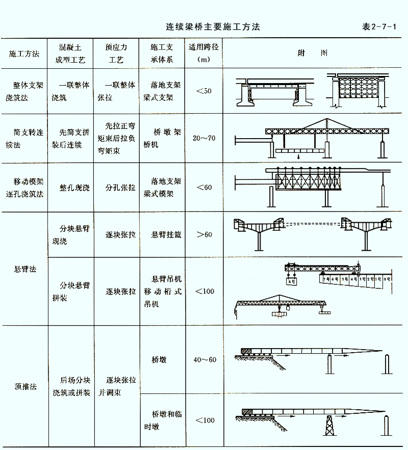
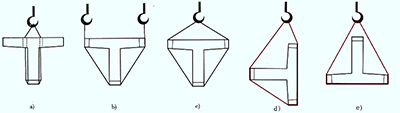
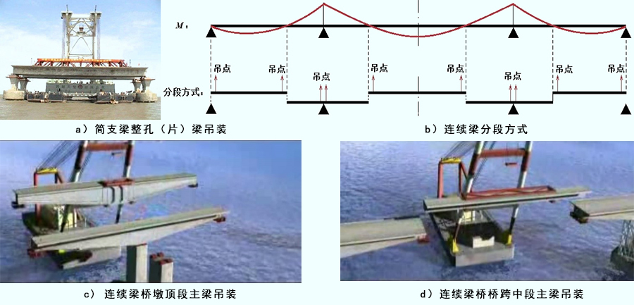
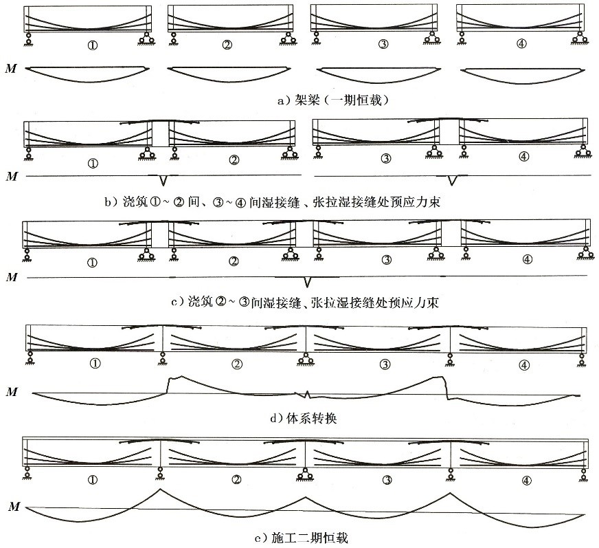
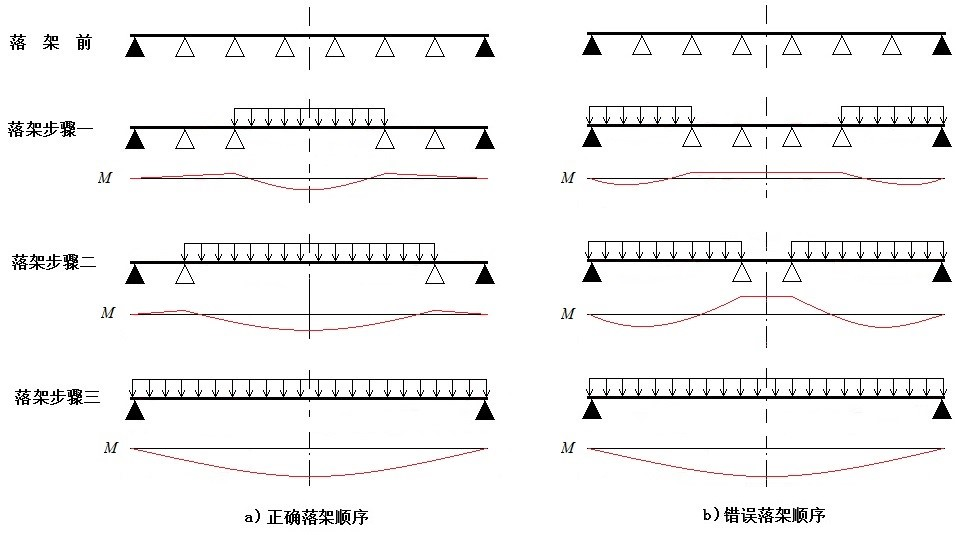
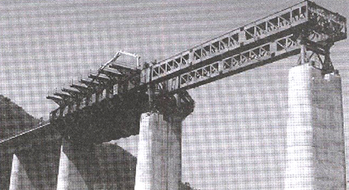
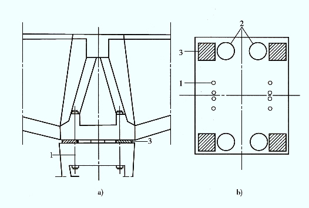
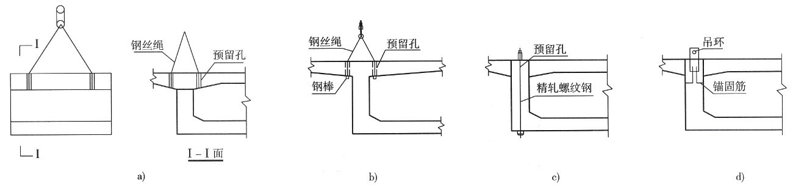
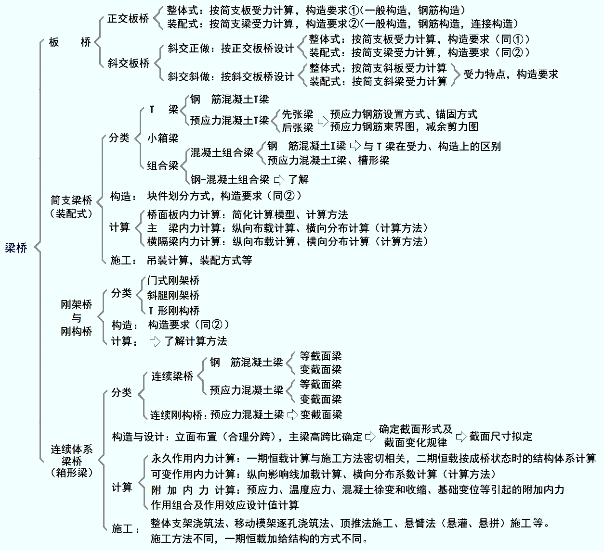

第二节 主要施工方法 — 桥梁工程 第2版
第二节 主要施工方法
第二节 主要施工方法
[A2-7.3] 梁桥施工方法主要分为现浇法和预制安装法两大类。
现浇法又分为整体支架现浇法、移动模架逐孔浇筑法、悬臂浇筑法等。整体支架浇筑法适合于桥墩不髙且桥下地面情况适宜搭设支架的中小跨径混凝土梁桥，一般适用于整体式结构的施工；移动模架逐孔浇筑法适用于等截面连续梁桥施工；悬臂浇筑法适用于变截面连续梁桥施工。
预制安装法有预制装配法、简支转连续法、悬臂拼装法等。预制安装法适合于有预制梁场地（或工厂预制）、有运输和吊装设备的情况。预制装配法一般适用于装配式梁桥、先简支后连续梁桥，跨径不大、结构重量满足起吊条件的整跨中小桥施工也有采用预制架设施工方法；简支转连续法适用于先简支后连续梁桥；悬臂拼装法适用于等截面和变截面连续梁桥施工。
表2-7-1列出了连续梁桥常用施工方法及适用跨径，可供参考。

一、预制装配法
[A2-7.4]1. 施工方法
（1）施工工序
预制装配法的施工工序为：在制梁厂（场）制梁、将成品梁移运至桥位处、采用起吊设备架设、安装完成。
（2）架设方法
预制梁（板）架设安装所采用的起吊设备应根据预制梁（板）的重量及桥址环境条件选用，目前几种常见的架梁方法有：陆地架设法、浮吊架设法、高空架设法等。
陆地架设法有自行式吊车架设和跨墩龙门式吊车架设。
当桥梁跨径不大，重量较轻时可以采用自行式吊车架梁。如果是岸上的引桥或者桥墩不高时，可以视吊装重量的不同，用一台或两台吊车直接在桥下进行吊装[图2-7-1a）]；如果桥下是河道或桥墩较高时则将吊车直接开到桥上，利用吊机的伸臂边架梁、边前进[图2-7-1b）]。
当桥不太高，架桥孔数又多，且沿桥墩两侧铺设轨道不困难时，可以采用跨墩的龙门式吊车梁（图2-7-2）。此时，尚应在龙门式吊车的内侧铺设运梁轨道，或者设便道用拖车运梁。
在海上或深水大河上修建桥梁时可采用浮吊船进行吊装架设，如图2-7-3所示。
图2-7-1 自行式吊车架设
图2-7-2 跨墩龙门式吊车架设法
图2-7-3 浮吊架设法
在没有吊装条件的情况下，可采用架桥机架梁。架桥机主要有宽穿巷式架桥机架设和联合架桥机架设等。图2-7-4所示是用宽穿巷式架桥机架梁的示意图，其中安装梁可用贝雷钢架或万能杆件拼组而成。图2-7-5所示是用联合架桥机架梁的示意图。
图2-7-4 宽穿巷式架桥机架梁步骤
图2-7-5 联合架桥机架设法
[A2-7.5] 2. 结构受力特点
由于桥址环境差异、预制梁（板）重量不同等因素，选用的架设方法不同，因而所使用的架设机具亦不同。无论采用何种方法架设，对预制梁（板）而言，架设过程都是起吊、运送和安放的过程，梁（板）体在此过程中始终处于被吊点支承的简支体系或悬臂体系（悬臂梁受力时）受力状态。合理确定预制梁（板）的起吊姿态、吊点位置，是确保其在施工过程中受力满足设计要求的关键。
①起吊姿态
梁是以受弯为主的构件，根据受力和构造要求，受力主钢筋布置在截面受拉边。在吊装、移运预制梁（板）过程中，应始终保持梁体正位[图2-7-6a）、b）、c）]，这样截面受力与设计是一致的。若采用倾斜[图2-7-6d）]或翻身[图2-7-6e）]的吊运方式，截面侧面或上缘将变成受拉边，在侧面或上缘未设置受拉钢筋的情况下，会导致截面开裂破坏，这与设计是不符的。

图2-7-6 预制梁（板）吊运姿态
②吊装梁段长度划分
装配式简支梁（板）、先简支后连续梁通常按一孔（片）梁的长度预制吊装[图2-7-7a）]。装配式连续梁桥，由于受起吊重量和吊装长度的限制可采用分段吊装，每段吊装长度最好选择在弯矩为零截面断开[图2-7-7b）]。如图2-7-7c）、d）所示，为东海大桥副通航孔连续梁桥分段吊装施工。

图2-7-7 东海大桥梁体吊装示例
③吊点位置确定
吊点位置应满足预制梁（板）在吊运过程中的受力状态与最终成桥状态一致，并按设计规定要求设置。悬臂梁吊点设在梁段中间[图2-7-7b）、c）]，简支梁一般设在支点上方附近。在起吊时若发现吊点失效或设计无规定时，可采用钢丝绳等吊装，吊点应根据计算确定，如图2-7-8所示。计算时可根据梁截面上、下缘纵向钢筋设置数量来控制梁体上、下缘拉应力不超出规范限值，应采用短暂状况构件应力计算方法，切不可按持久状况承载能力极限状态计算，否则将导致预制梁（板）在吊装过程中即开裂破坏。
图2-7-8 梁体吊装计算
[A2-7.6][例2-7-1] 试确定图2-7-8的吊点位置。
假设梁为矩形截面，截面下缘纵向钢筋面积为Ag1，上缘纵向钢筋面积为Ag2。在起吊过程中，跨中最大正弯矩为M1，吊点处最大负弯矩为M2。
根据《桥规》（JTG D60—2015）规定：构件在吊装、运输时，构件重力应乘以动力系数1.2。
在吊运过程中是不允许截面开裂的，因此，可用结构力学方法进行计算。构件受力如图2-7-8b）所示，由结构力学知： ， 。
当截面上、下缘配筋量相同时，
将M1和M2计算式代入，得：
当截面上、下缘配筋量不同时，可根据，推算出:
$$l_2\approx \dfrac{1}{2+2\sqrt{1.2n+1}}L\tag{2-6-1}$$
式中： n——梁截面下缘与上缘纵向钢筋面积比值，
二、简支转连续法
[A2-7.7]1. 施工方法
（1）施工工序
简支转连续法的施工工序为：梁体预制、架梁（此时梁体为简支体系）、浇筑墩顶连续段及翼板、横隔梁混凝土（即浇筑湿接缝）、张拉湿接缝处主梁负弯矩钢束、梁体形成连续体系、浇筑桥面现浇层混凝土、安装护栏、浇筑桥面铺装、安装附属设施。
（2）湿接缝施工顺序
湿接缝施工顺序如图2-7-9所示，由桥跨两端对称向跨中逐跨施工。
图2-7-9 湿接缝施工顺序
[A2-7.8] 2. 结构受力特点
以4跨简支转连续梁桥施工为例，梁在施工过程中的永久作用内力（弯矩M）变化如图2-7-10所示。在施工过程中，一期恒载作用下结构是简支体系受力[图2-7-10a）]；现浇湿接缝并张拉湿接缝处梁顶预应力束后，结构由简支体系转换成连续体系；在二期恒载作用下结构是连续体系受力[图2-7-10e）]。因此，简支转连续的桥跨结构与相同跨径的简支梁相比，在一期恒载（自重）作用时结构受力完全相同，在二期恒载作用下跨中弯矩较简支梁要小，但支点有二期恒载作用下的负弯矩作用。

图2-7-10 4跨先简支后连续梁桥施工过程与永久作用内力
[A2-7.9] [例2-7-2]以三跨30 m简支梁桥与相同跨径、结构尺寸的先简支后连续梁桥作比较，分析两者受力区别。
设结构自重为g1（kN/m），二期恒载为g2（kN/m），汽车荷载为qk（kN/m）（为便于比较，暂不考虑pk作用）。两者计算结果见表2-7-2所示。从基本组合内力计算结果可以看出，简支梁桥跨中弯矩大于先简支后连续梁桥中跨跨中弯矩；但在二期恒载和汽车荷载作用下，先简支后连续梁桥中跨支点将承受负弯矩作用。
表2-7-2 简支梁桥与先简支后连续梁桥的主梁弯矩
| 结构类型 |
自重g1 |
二期恒载g2 |
汽车荷载qk |
基本组合 |
3×30m
简直梁桥 |
0.125g1l2 |
0.125g2l2 |
0.125qkl2 |
γ0·(0.150g1+0.150g2+0.175qk)·l2 |
3×30m
先简支
后连续
梁 桥 |
中跨
跨中 |
0.125g1l2 |
0.025g2l2 |
0.025qkl2 |
γ0·(0.150g1+0.030g2+0.035qk)·l2 |
中跨
支点 |
0 |
-0.100g2l2 |
-0.100qkl2 |
-γ0·(0.120g2+0.140qk)·l2 |
三、整体支架浇筑法
[A2-7.10] 1. 施工方法
（1）施工工序
整体支架浇筑梁桥施工是在桥孔位置处安装支架、立模后就地施工混凝土梁的工艺。施工工序为：地基处理、支架搭设、模板系统安装、支架加载预压、钢筋（预应力钢筋）安装、内模安装、混凝土施工、混凝土养生、预应力张拉、压浆、落架、拆除支架、模板。整体支架浇筑法是一种最常用的施工方法，几乎适用于所有钢筋混凝土及预应力钢筋混凝土梁桥的施工。
（2）支架结构
支架是用于支承结构物荷载、模板和其他施工荷载的临时结构，按照支撑和构造方式的不同，支架可分为满布式支架（或者称为立柱式支架）、梁式支架（或者称为梁柱式支架）、组合支架等，如图2-7-11所示。
图2-7-11 支架结构
[A2-7.11]2. 结构受力特点
（1）卸落架要求
不论采用何种支架结构，对梁体而言，在支架拆除前，梁体是不受力的，结构自重全部落在支架上。随着支架的逐步拆除，梁体开始逐渐承受自身重力（一期恒载）作用。支架拆卸顺序对结构受力影响很大，这就要求在拆架（又称落摸）过程中，梁体的受力状态与最终成桥状态始终保持一致，为此对支架卸落顺序提出以下要求：
①应对称、均匀和有顺序地进行。根据梁体变形“从大到小”原则分级循环进行，即先卸落变形较大的位置，后卸落变形较小的位置，单次卸落量控制在1～2 cm，且横桥向应对称同步进行，严防梁体受扭。
②对于单跨现浇梁，通常采用从跨中向两边顺序进行[图2-7-12a）]。

图2-7-12 简支梁桥支架卸落过程永久作用内力（弯矩）
（2）卸落架对结构的影响
①简支梁
图2-7-12所示为支架法现浇简支梁桥支架卸落顺序示意。支架卸落顺序应从跨中向两边顺序进行[图2-7-12a）]，这样，跨中截面始终承受正弯矩作用，随着支架逐步向两端卸落，跨中正弯矩和挠度逐步积累，最终达到一期恒载最大值，梁体总体受力和变形与简支梁成桥状态一致。虽然在支架卸落过程中，梁顶会出现负弯矩，但量值不大（可根据截面上缘设置的纵向构造钢筋，计算所能承受的负弯矩值）。若支架按从两边向跨中顺序 [图2-7-12b）] 进行卸落，跨中截面在中间支架卸落前，始终承受负弯矩作用。随着支架逐步向跨中方向卸落，跨中截面负弯矩逐步积累，在跨中附近最后一批支架卸落前达到负弯矩最大值，可能导致跨中截面上缘开裂，致使梁体报废；在跨中附近最后一批支架卸落后，跨中截面由负弯矩迅速变为正弯矩，跨中挠度快速增大，这样又容易导致截面下缘开裂。因此，支架拆卸顺序正确与否，不但对梁体受力产生影响，而且决定施工质量
②连续梁
应对称、均匀和有顺序地进行。根据梁体变形“从大到小”原则分级循环进行，即先卸落变形较大的位置，后卸落变形较小的位置，单次卸落量控制在1～2 cm，且横桥向应对称同步进行，严防梁体受扭。
四、移动模架逐孔浇筑法
[A2-7.12] 1. 施工方法
（1）施工工序
移动模架浇筑施工是指采用移动式桁架为主要支承结构的整体模板支架的施工方法。施工工序为：现场一次完成一跨梁体全断面混凝土浇筑、施加预应力、整孔移动式桁架及模板推移至下一孔、进行下一孔梁体施工，如此重复，逐跨推进，直至完成桥梁施工。如图2-7-13所示为某实桥采用移动模架浇筑施工实例。该方法适用于等截面简支梁、连续梁桥。

图2-7-13 移动模架施工示例
（2）与整体支架法比较
移动模架逐孔浇筑法与整体支架浇筑法的不同，在于逐孔浇筑施工仅在一跨梁上设置模架，当预应力钢筋张拉结束后模架移到下一孔，因此，在施工过程中有体系转换问题，混凝土徐变对结构将产生附加内力。而整体支架现浇法通常在一联桥跨上均布设支架连续施工，无需体系转换。
[A2-7.13] 2. 结构受力特点
在移动模架开启过墩移至下一孔前，梁体是不受力的，结构自重全部落在模架上。当模架开启后，梁体支承在桥墩上。对于连续梁桥，施工接缝位置的选择十分重要，断位不当会导致最终成桥状态结构受力不利。如果将施工接缝设在按一次落架计算的弯矩较小截面处（一般设在距桥墩支点 处），最好选择在弯矩为零截面，由此得到的最终成桥状态与一次落架弯矩完全相同，如图2-7-14a）所示。若采用按设计跨径进行分跨施工，最终成桥状态弯矩则与一次落架弯矩有较大区别，如图2-7-14b））所示。
图2-7-14 逐孔架设连续梁桥施工过程与永久作用弯矩
五、悬臂施工法
[A2-7.14]1. 施工方法
（1）施工工序
悬臂施工是将梁体沿桥跨分成若干节段，在桥墩两侧平衡地逐段向跨中施工，并逐段施加预应力的施工方法。悬臂施工法包括悬臂浇筑法和悬臂拼装法。
①悬臂浇筑法
悬臂浇筑法（简称悬浇法，或悬灌法）施工是在桥墩两侧设置工作平台，平衡地逐段向跨中悬臂浇筑混凝土梁体，并逐段施加预应力的施工方法。由于悬臂浇筑法受地形条件影响不大，对桥下交通影响小，因此，广泛应用于跨山谷、既有道路、江河和海域的大桥。适用于大中跨径的预应力混凝土悬臂梁桥、连续梁桥、T形刚构桥、连续刚构桥、拱桥及斜拉桥等结构施工。
施工工序为：墩顶梁段（0号块）施工、墩梁临时固结、0号块两端对称组拼挂篮并预压、对称逐块悬浇各悬臂梁段并张拉预应力、边跨合龙、解除临时固结（体系转换）、中跨合龙、施工二期恒载。
②悬臂拼装法
悬臂拼装法（简称悬拼法）施工是利用架桥机或悬拼吊机逐步将预制梁段起吊就位，以胶黏剂作为接缝材料，再通过对预应力钢束的张拉，使各梁段连接成整体的一种梁桥施工方法。悬拼法是国内外大跨径预应力混凝土悬臂梁、连续梁及连续刚构桥中最常用的施工方法之一。
施工工序为：墩顶梁段（0号块）施工、墩梁临时固结、在制梁场预制好各梁段、对称逐块悬拼各悬臂梁段并张拉预应力、边跨合龙、解除临时固结（体系转换）、中跨合龙、施工二期恒载。
值得注意的是，悬臂施工时，悬臂两端一定要对称浇筑混凝土，不可使两端的混凝土浇筑量产生过大误差，否则，桥墩在施工过程中将承受偏心压力作用，尤其对高墩大跨径桥墩的影响是非常不利的。
（2）体系转换
连续梁在施工中需要墩梁临时固结（图2-7-15），悬臂施工过程中始终是T形刚构受力体系，待桥跨合龙后再进行体系转换，去除墩顶临时固结，这时桥跨结构为连续梁受力体系。在合龙时，根据合龙顺序的不同，结构由T形刚构受力体系转变成单悬臂梁或双悬臂梁受力体系，结构受力不同，由徐变引起的内力重分布也不相同。因此，连续梁桥在设计计算中采用的合龙方式，施工中必须采用相同的合龙方式，否则，应对结构重新进行计算与验算。
如图2-7-16所示为几种常用的合龙方式，目前采用最多的是先边跨后中跨合龙方式[图2-7-16b）]。

1-预应力钢筋；2-千斤顶；3-临时支座（外包箍筋的混凝土垫块）
图2-7-15 预应力钢筋在梁体内临时锚固
图2-7-16 悬臂法施工连续梁桥合龙方式
（3）悬拼法施工中节段吊装
悬臂拼装法施工，各节预制梁段需要吊运。移运梁段时吊点位置应按设计规定要求设置，一般设在腹板附近，如图2-7-17所示四种吊点设置方式。

a）钢丝绳与钢棒吊点；b）钢丝绳捆绑吊点；c）预应力螺纹钢筋吊点；d）吊环吊点
图2-7-17 梁段吊点设置方式
在设计无规定时，吊点应根据计算确定，避免图2-7-18所示的方式吊装。连续梁桥通常采用箱形截面梁，梁段自重较大。在面横向若采用图2-7-18a）所示的捆绑方式，容易造成箱梁翼板弯折，或翼板端部由于受力过大导致破坏。在纵向若采用图2-7-18b）所示的单点起吊或两起吊点距离较近时，在吊运过程中可能发生侧倾事故，这些在施工中都是必须避免发生的。
图2-7-18 梁段吊运
[A2-7.15] 2. 结构受力特点
以5跨连续梁桥为例简述桥跨结构在施工过程中承受一期恒载作用的内力变化。
（1）悬臂施工阶段
连续梁悬臂施工阶段，梁体在一期恒载和施工荷载作用下始终是T形刚构受力体系，一期恒载和预加力随着每段的施工作用于梁体上。T形刚构随着施工过程推进，梁端端悬臂长度不断加长，墩顶负弯矩随之累加增大，至合龙前最后一块悬臂段施工完成，悬臂长度达到最大，墩顶负弯矩亦达到最大值，如图2-7-19a）所示。
（2）边跨合龙、拆除支架
边跨（第1、5跨）合龙，一般采用先在支架上施工边跨现浇段，再进行边跨合龙段现浇，待混凝土达到设计强度后张拉合龙段和边跨现浇段预应力束。当支架拆除后，结构体系为一端固定、一端铰支的单跨单悬臂梁（超静定结构），边跨现浇段与合龙段梁体自重作用在结构上产生的内力如图2-7-19b）所示。
（3）边跨体系转换
拆除2号墩、5号墩上的临时支承，墩顶永久支座开始受力。此时，墩顶由固结转换为简支，结构体系转换成两端简支的单跨单悬臂梁（静定结构），计算由体系转换释放的不平衡弯矩在结构上产生的内力，如图2-7-19c）所示。
（4）次边跨合龙
次边跨（第2、4跨）合龙，一般采用在梁上支架或挂篮上施工合龙段，待混凝土达到设计强度后再进行合龙段预应力束张拉。计算单悬臂梁和T构在支架与模板（或挂篮）重力及合龙段自重作用下的内力，如图2-7-19d）所示。
（5）拆除次边跨合龙段支架（或挂篮），次边跨体系转换
当支架或挂篮拆除后，支架与模板（或挂篮）重力及合龙段自重将反方向加给已合龙的结构体系上，由此而产生的结构内力如图2-7-19e）所示。
拆除3号墩、4号墩上的临时支承，墩顶永久支座开始受力。此时，墩顶由固结转换为简支，结构体系转换成单悬臂两跨连续梁，计算由体系转换释放的不平衡弯矩在结构上产生的内力，如图2-7-19f）所示。
（6）中跨合龙
中跨（第3跨）合龙一般采用在梁上支架或挂篮上施工合龙段，待混凝土达到设计强度后再进行合龙段预应力束、跨中底板预应力束等张拉。计算合龙段两侧悬臂端在支架与模板（或挂篮）重力及合龙段自重作用下的内力，如图2-7-19g）所示。
（7）拆除中跨合龙段支架（或挂篮）
合龙段支架或挂篮拆除后，结构体系为最终成桥体系——连续梁。支架与模板（或挂篮）重力及合龙段自重将反方向加给已合龙的连续梁上，由此而产生的结构内力如图2-7-19h）所示。
（8）永久作用内力累计
连续梁最终一期恒载内力是伴随施工过程的进程逐步累加的，是图2-7-19a）～图2-7-19h）的内力叠加，如图2-7-19i）所示。
图2-7-19 5跨连续梁施工程序与永久作用内力
六、顶推法
[A2-7.16] 1. 施工方法
（1）施工工序
顶推法是在被顶推梁体的后部，设置顶推平台，在平台上分节段预制混凝土梁体，并施加预应力钢筋连成整体后，经水平千斤顶施力，使梁体在各墩滑道上逐段向前滑动，直至全联连续梁安装就位（图2-7-20）。顶推法可在水深、山谷和高桥墩上采用，也可在纵坡相同的坡桥及曲率相同的弯桥上采用；适宜于等截面梁，以中等跨径的桥梁为宜。
顶推法施工工序为：预制场准备、箱梁的预制和拼装、安装顶推装置和滑移装置、顶推梁体、落梁就位、施加预应力、施工完成后拆除导梁等。
图2-7-20 顶推法施工
（2）施工过程对结构设计的影响
顶推法施工的连续梁在顶推过程中，随着梁跨的跨数增多，结构体系不断转换为高次超静定结构。连续梁内各个截面在移动过程中所承受的弯矩，正负方向交替出现，而且是不断变化的，因此是控制梁设计的一个重要因素。在顶推过程中，梁内出现的弯矩可绘制成弯矩包络图，与运营阶段的永久作用、可变作用（或加上其他各项因素，如各项附加内力）弯矩包络图同为结构控制设计的最不利内力计算图。顶推过程的弯矩包络图常需要结构接近中心配束，而运营阶段的永久作用、可变作用弯矩包络图要求结构曲线配束，为此，顶推法施工常需要在结构内设置能拆除的临时束，待连续梁最终成桥状态时予以拆除。
[A2-7.17]2. 结构受力特点
多跨连续梁在顶推过程中的弯矩包络图如图2-5-6所示，前伸带导梁的第一孔梁截面通常是受力最大部位，其余梁段上受力变化很小，因此，为了减小结构内力，通常使用较混凝土梁更轻的钢制导梁。
顶推施工过程受到的不利影响因素较多，从顶推连续梁的自身特点来看，为了保证顶推施工顺利进行，在任何状态下结构受力均应在设计允许范围以内，落梁后的主梁受力状态（截面弯矩、支座反力）要与设计相符。
导梁作为施工的辅助工具，在施工完成后要予以拆除。导梁的拆除相当于给主梁梁端施加了一个方向弯矩作用，如图2-7-21所示，分别给出了4跨、5跨、6跨等截面等跨连续梁拆除导梁对桥跨结构的受力影响。受力影响最大的是连接导梁的第一跨，随后逐渐衰减，三跨以后影响很小，因此在设计中，拆除导梁对第一跨的影响是不可忽略的。在实际施工中，导梁一般分段拆除，为了说明问题，图2-7-21所示数据是按一次性拆除计算的。
图2-7-21 拆除导梁对桥跨结构的影响
[A2-7.18][拓展小知识2-6] 悬臂浇筑法施工
相同孔跨布置的连续刚构桥和连续梁桥，均采用悬臂浇筑法施工时，两者施工步骤和施工方法类似，仅在桥跨结构合龙后，前者不需要进行墩梁固结的体系转换，后者需要。以图2-7-20为例，若为连续刚构桥，不需要进行体系转换，则在自重作用下各跨内力积累将不同于连续梁桥，这将导致主梁支点截面、跨中截面尺寸与配筋量不同于连续梁。
[A2-7.19][学习提示]
桥跨结构在达到成桥状态前的施工过程是桥跨结构自重荷载逐步施加给结构的过程，施加方式与施工方法密切相关。因此，设计者必须了解每一种施工方法，首先要保证所设计的结构可建造并且易操作，其次要保证桥跨结构受力合理；施工者应进行施工组织设计，保证在整个施工过程中各构件受力合理，避免对桥梁造成原始损伤。在这部分学习中，读者应了解每一种施工方法的施工过程对结构受力影响，并举一反三，分析是否可采用其他施工方法，对结构受力有何影响。
[A2-7.20][思考与练习]
1. 分析图2-7-16所表示的连续梁桥三种不同合龙方式对应的内力（弯矩）规律。
2. 分析简支梁在吊运过程中，如果采用图2-7-6d）、e）所示的起吊方式，会导致怎样的后果？
3. 若板桥（L×B）整孔吊装架设，如何确定起吊点位置？
4. 装配式钢筋混凝土简支T梁，跨中截面下缘受拉钢筋为8Φ32，截面上缘架立钢筋为2Φ32。在吊装时（暂不考虑动力系数），吊点位置该如何选取？
5. 以3×40m等截面连续梁桥为例，分别采用预制装配法、简支转连续法、整体支架浇筑法、移动模架法、悬臂浇筑法、顶推法施工时，分析在一期恒载作用下成桥状态的内力（弯矩）分布规律。（不计张拉预应力、混凝土收缩徐变效应等产生的附加内力，仅考虑结构重力。梁节段自行划分，以使最终成桥状态截面受力最小为原则。）
6. 以图2-7-9中6孔一联先简支后连续梁桥为例，说明如果采用从第1跨至第6跨顺序施工现浇接头，需要分五步施工现浇段才能完成成桥状态，这将对结构产生什么影响？
7. 分析图2-7-12还有哪些可能发生的拆架方式？试分析这些拆架方式对结构的受力影响。
[A2-7.21][本篇总结]
1. 简支梁桥构造与设计
- 简支梁按承重结构（梁）的横截面形式，可分为板桥、肋梁桥和箱形梁桥。
- 简支板桥按施工工艺分为整体式和装配式（分片式）两大类。为使装配式板桥的各块板件能共同受力，必须在板与板之间做好连接构造。普遍采用的连接方式为企口混凝土铰接连接。斜交角φ＜15°的斜板桥可近似按正交板桥设计， φ＞15°的斜板桥，则按斜板受力性能设计。
- 简支肋梁桥常用截面形式有T形和I形。T梁桥的主梁由梁肋、翼板、横隔梁（中横隔梁、端横隔梁）等部分组成。主梁的上翼板既是主梁的一部分，又联合构成桥面板，承受汽车和人群荷载作用。横隔梁的作用是保证各根主梁相互联结成整体，共同承受荷载。
- 装配式简支梁桥的桥面板（翼板）横向连接有刚接（现浇湿接缝）和铰接（企口）两种；横隔梁的横向连接现在均采用现浇湿接缝连接。
- 箱形梁具有良好的受力性能，与同等截面面积的肋梁桥和板桥相比，闭口的箱体具有很大的抗扭刚度和横向抗弯刚度。按施工工艺分为整体式和装配式，整体式（箱梁）主要用于连续梁桥和连续刚构桥，装配式（小箱梁）主要用于简支梁桥和先简支后连续梁桥。
- 为了减轻预制构件的起吊重量，可以把梁肋与桥面板分开来预制，然后在桥孔处进行吊装和联结成整体，这就是组合梁桥。组合梁桥常用的截面形式为I型梁肋加现浇桥面板（又称为组合T梁），组合T梁与装配式T梁在受力上是不同的。
2. 简支梁桥计算
- 简支梁桥上部结构设计计算包括桥面板计算、主梁计算和横隔梁计算三大部分。
- 根据结构构造的不同，桥面板计算的力学模型有单向板、铰接悬臂板、悬臂板三种。在桥面板计算中，为了计算方便，引入了板的有效分布宽度的概念。
- 在多肋式简支梁桥的主梁计算中，永久作用内力一般按均匀分摊计算。可变作用内力计算应先根据荷载横向分布系数m确定欲求主梁所承担的最大荷载值，再从桥跨纵向按计算单梁的方法计算最不利内力值。
- 常用的荷载横向分布系数m的计算方法有杠杆原理法、偏心压力法（修正偏心压力法）、横向铰接板（梁）法、横向刚接梁法和比拟正交异性板法（G—M法）五种。杠杆原理法适用于计算桥跨结构支点处的荷载横向分布系数m0，其余四种方法适用于计算桥跨结构跨中的荷载横向分布系数mc。偏心压力法（修正偏心压力法）主要用于具有可靠横向联系的窄桥；横向铰接板（梁）法适用于相邻板（梁）之间为铰接，而横向刚接梁法适用于相邻主梁之间为刚接，并且无中横隔梁或中横隔梁道数很少的装配式桥；比拟正交异性板法（G—M法）适用于桥面连续、横向联系较多的宽桥。
3. 刚架桥与刚构桥
- 门式刚架桥由于墩梁固结，减小了主梁跨中正弯矩，且墩底水平推力又将使主梁受压，因此，可采用钢筋混凝土结构，并且较同跨径简支梁桥的主梁梁高低，适用于跨线桥，但其跨越能力不大，且要求地质条件良好。三跨两腿门式刚架在两端设有桥台，采用预应力混凝土结构时，可增大跨越能力。
- 斜腿刚架桥较相同主梁长度的门式刚架桥能实现更大跨径。但双悬臂斜腿刚架桥的两悬臂端易向上翘起而引起桥头跳车现象；V形墩刚构桥由于V形墩上梁的受力，限制了V形墩刚构桥的适用范围。
- 在役T形刚构桥有钢筋混凝土T形刚构桥和预应力混凝土T形刚构桥。由于在长期使用中发现T形刚构桥的主梁悬臂端部下挠变形严重，在桥面伸缩缝处（跨中设铰或挂孔时）形成折角，造成通行车辆行车不平顺，纵桥向线形与原设计值相差较大，影响了桥梁的正常使用和安全。故在多跨桥梁设计中，T形刚构桥被连续刚构桥取代。连续梁桥和连续刚构桥采用悬臂法施工时，在一期恒载作用下，连续梁桥和连续刚构桥的受力、配筋与T构相同。
4. 连续体系梁桥
- 预应力混凝土连续梁具有变形小、结构刚度好、行车平稳舒适、伸缩缝少、养护简易、抗震能力强等优点。连续梁与静定体系的其他形式的梁桥相比，具有较为显著的经济性，可减小跨中弯矩和挠度。
- 由于连续梁是超静定结构，结构各构件内力的大小与抗弯刚度直接相关。因此，若将连续梁中间支承截面的刚度加大，如变高度梁，可以调低跨中的正弯矩，使大部分预应力钢筋可以布置在梁的顶部，便于张拉。虽然中间支承处的负弯矩有所增大，但梁的高度也相应地加高了，并不致引起钢筋用量的增多。
- 从梁内弯矩的分布情况来看，对于每联三跨以上的连续梁，等跨布置时边跨的跨中弯矩大于中间跨的跨中弯矩，故常采用缩短边跨的办法来调整中支点负弯矩和跨中正弯矩的分布规律，边跨与中跨的比值可在O.7～0.5之间。
- 多跨连续刚构桥综合了T形刚构桥在悬臂法施工中保持体系平衡的特点，又吸取了连续梁桥在整体受力上能承受正、负弯矩的优点，能实现更大跨径。
- 连续刚构这种体系利用主墩的柔性来适应桥梁的纵向变形，所以在大跨高墩中比较适合。刚构桥的内力分布取决于主梁与桥墩的刚度比。
- 连续刚构桥中水平力主要是按照桥墩的水平抗推刚度进行分配，当连续刚构桥的孔数较多，并且各个桥墩高差相差较大时，在边跨矮墩中的刚度往往很大而导致墩中弯矩也较大，此时桥墩一般要比其他位置的桥墩截面尺寸大，这时，在矮墩的墩顶处设铰以“释放”弯矩，即在矮墩处做成连续梁的形式，这就是另外一种结构形式，刚构－连续梁组合梁。
- 连续刚构墩梁多设置成柔性墩，柔性墩可分双薄壁墩和单薄壁墩两种。
- 增加双肢薄壁高墩墩间横系梁后，无论是最大悬臂阶段还是成桥阶段，桥梁的顺桥向稳定性均有较大的改善，而对于桥梁的横向稳定性基本上没有影响，随着墩间横系梁数量的增加，对稳定性的贡献也趋于稳定。
- 双薄壁墩设置横系梁在恒载、活载和温度组合作用下，上下缘均可出现拉应力，故配筋时应注意上、下缘都配受拉钢筋。
- 预应力混凝土连续体系梁桥永久作用（一期恒载）内力计算与所采用的施工方法密切相关。为了正确计算连续梁的永久作用（一期恒载）内力，必须将永久作用（一期恒载）内力与所采用的施工方法相联系综合考虑。
- 连续体系梁桥是超静定结构，除永久作用、可变作用产生结构内力外，在温度、预加力、混凝土徐变、基础不均匀沉降等因素作用下，当结构的位移受到约束时均会引起附加内力，在设计计算中必须正确考虑这些附加内力的影响,一般采用结构力学的方法进行计算。
5. 梁桥施工
- 梁桥施工方法主要分为现浇法和预制安装法两大类。现浇法又分为整体支架现浇法、移动模架逐孔浇筑法、悬臂浇筑法等。预制安装法有预制装配法、简支转连续法、悬臂拼装法等。
- 整体支架浇筑法适合于桥墩不髙且桥下地面情况适宜搭设支架的中小跨径混凝土梁桥，一般用于整体式结构的施工，在施工中注意拆架方式对结构受力影响。
- 移动模架逐孔浇筑法适用于等截面连续梁桥施工，在施工中注意施工接缝位置的确定对结构受力的影响。
- 悬臂浇筑法适用于变截面连续体系梁桥施工，在施工中应注意合龙顺序、边跨现浇段长度、体系转换时间等对结构受力影响。连续梁桥与连续刚构桥的区别在于主梁合龙后的体系转换，从而导致两者受力与配筋的区别。
- 预制安装法适合于有预制梁场地（或工厂预制）、有运输和吊装设备的情况，在梁的预制、运输和安装过程中，注意梁的姿态、梁段长度划分、吊点位置确定等对梁受力影响。
- 预制装配法一般用于装配式简支梁桥、先简支后连续梁桥、悬臂拼装连续梁桥，跨径不大（或长度不长）、结构重量满足起吊整跨条件的中小桥（或连续梁桥主梁）施工，也有采用预制架设施工方法。在施工中注意拼装接头的设计与施工顺序对结构受力影响。
- 简支转连续法适用于先简支后连续梁桥，在施工中注意相邻两跨连续时，现浇湿接缝施工顺序及预应力张拉导致的附加内力对结构受力影响。

图2-Z-1 第二篇学习内容概要
\(\ \)